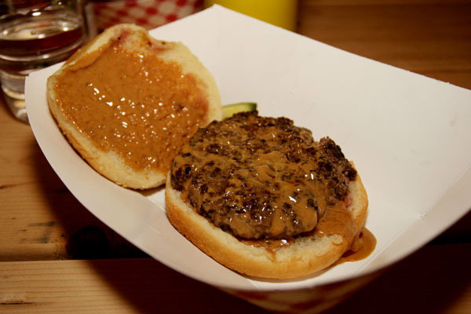

The Guberburger

Description
The Guberburger wins
converts though, usually the ones with an open mind who are unafraid of
complex flavors.
Anyone who has eaten Thai food and other tasty treats
from Southeast Asia knows that the peanut plays a vital role in the
cuisine. Beef satay, grilled beef on skewers accompanied by a peanut
dipping sauce, is not far from the experience of the Guberburger.
Ingredients
- neutral oil
- 1kg fresh-ground meat
- salt
- 240ml creamy peanut butter
- soft white buns
- dill pickle chips
Steps
- Preheat the cast-iron skillet over medium heat (or a flat top to
medium) and add a drop or two of peanut oil. Use the spatula to spread
the oil, coating the cooking surface.
- Place the ground beef in a mixing bowl and, using the salad scoop,
form balls of beef, placing them on the heated skillet as you go.
- Add a generous pinch of salt to each ball of beef and then, using the
stiff spatula, press them down hard until they become wide patties just a
bit larger than the buns. Let them cook, undisturbed, for 2½ minutes or
until reddish liquid begins to form on the surface of the patties.
- As soon as the patties are smashed, heat the peanut butter in the small
saucepan over low heat.
- When they’re ready, flip each patty once and don’t press them again.
Spoon some of the warm peanut butter over the patties and cook for
another 2 minutes or so.
- Meanwhile, add 2 or 3 pickle chips to each bottom bun and set aside.
- When the patties are cooked though, remove them from the heat and
place them on the prepared toasted buns. Serve with pride.